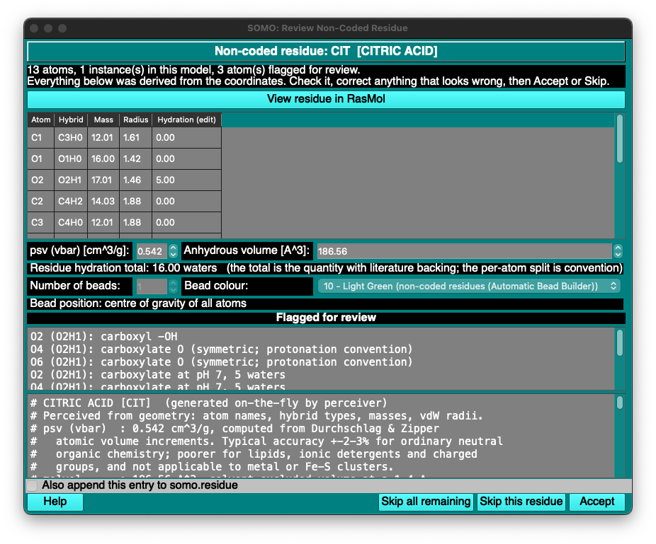

|
Manual
|
SOMO - Perceive Non-Coded Residues:
Last updated: August 2026
A residue that is not defined in the somo.residue table
is handed to the Automatic Bead Builder, which represents it by a single bead carrying
averaged, generic properties. For a ligand, a cofactor or a modified residue that can be
a poor description.
This module derives a tentative somo.residue entry for such a residue from its
coordinates alone, and presents it for review. Nothing is computed from the residue's
name: bonds are perceived from interatomic distances, rings and aromaticity from the resulting
graph, and each atom's hybridization — and hence its mass, van der Waals radius and
electron count — follows from that. The partial specific volume, the anhydrous volume and
the hydration are then computed from the perceived chemistry.
It is reached from Lookup Tables → Perceive Non-Coded Residues... after a
structure has been loaded.

Using the module:
- Load a PDB containing a residue somo.residue does not code.
- If US-SOMO raises its own dialog about the unrecognized residue, choose the
option that stops processing. Perceive first, build second: letting the bead builder
run first leaves the Automatic Bead Builder's _NC placeholder residues in the model.
- Open Lookup Tables → Perceive Non-Coded Residues...
- Review each proposed entry and Accept or Skip this residue.
- Build the bead model as usual (SoMo, SoMo overlap, vdW or AtoB).
One dialog is shown per non-coded residue type. Everything the module does — and
every reason it declines to do something — is echoed to the text window.
The review dialog:
- View residue in RasMol shows the residue in its structural context.
- The atom table lists each atom's perceived name, hybridization, mass and radius.
These are read-only: they follow from the geometry, and editing them would
desynchronise the entry from the structure it was derived from. The hydration column
is editable.
- Anhydrous volume and psv are editable.
- Bead count is fixed at one for now; the bead position is the centre of
gravity of all atoms; the bead colour defaults to light green, the colour the
Automatic Bead Builder uses for non-coded residues. Colours that would exclude a bead from
the hydrodynamic computation are never offered.
- The Flagged for review box lists everything the perceiver was not confident about. These are
the entries worth your attention; they are not noise.
- Skip all remaining abandons the review and leaves every remaining residue to the
Automatic Bead Builder. A neutron structure with explicit deuteriums can make a great many
residues look non-coded; this is the way out.
How long does an accepted entry last?
| Action | Where the entry goes | How long it lasts |
|---|
| Accept, checkbox unticked |
somo.residue.perceived, which becomes the active lookup table |
this session only |
| Accept + Also append this entry to somo.residue |
also appended to your somo.residue |
permanent |
On Accept the entry takes effect at once: the structure is re-read against the updated
table and the residue stops being non-coded, so a bead model can be built straight away. The
label beside Select Lookup Table changes to somo.residue.perceived, so the active
table is always visible.
Accepted entries are not remembered across restarts. US-SOMO resets the
active table to somo.residue every time it starts. The somo.residue.perceived file
remains on disk but is not loaded, and the next session's first Accept rebuilds
that file from somo.residue — overwriting what an earlier session accepted. To keep
an entry, either tick Also append this entry to somo.residue, or press Select Lookup Table and choose
somo.residue.perceived by hand before accepting anything new.
Accepting several residues within one session accumulates them all into the one file.
What the computed numbers are worth:
- psv is computed from the Durchschlag & Zipper atomic volume increments. Typical
accuracy is ±2-3% for ordinary neutral organic chemistry, and poorer for charged
groups, lipids and ionic detergents. It is not applicable to metal or Fe-S clusters.
- Anhydrous volume is a solvent-excluded volume computed on a grid at a 1.4 Å
probe, scaled onto the convention the coded residues use.
- Hydration is the weakest of the three. It is proposed from pH 7 chemistry
rules, falling back to an average over the coded residues for groups the rules do not
recognise. The residue total is the quantity with literature backing (Kuntz); the
per-atom split is convention. vdW models rely on atomic hydration, so that is where
a weak proposal shows up as a real modelling problem rather than as a number in a table.
- ASA is a placeholder, not a measurement. Nothing computes with a residue's tabulated
ASA, but it may not be zero or the entry will not load at all.
Current limitations:
- A perceived residue is a single bead with all atoms assigned to it. Multi-bead
residues are not proposed.
- Protonation and tautomer states that heavy-atom geometry cannot resolve (histidine, the
guanine lactam tautomer) follow a fixed convention rather than being perceived.
- An atom whose name is absent from the somo.atom
table is resolved from its hybridization, or failing that its element, rather than being
dropped from the surface area and excluded volume. The text window records each such
substitution.
The
latest version of this document can always be found at:
http://somo.aucsolutions.com
Last modified on August 9, 2026.